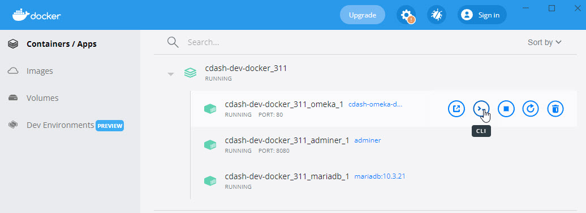

Local Development Set-Up
One of the recent (in dog years) miracles of cloud computing is the Containerization of web applications. A container in this sense is similar to what we used to call a "server." Whereas servers used to be actual computers, they now may be implemented as collections of code that act like a server.
Because of containers, we are able to have a web server and a database server all speaking with each other as if they were on the cloud with their web interfaces and a command prompt accessible through our browser, with all of the back-end code accessible to our favorite text editor. And all of this will run on whatever computer we want such as our work-a-day laptop or desktop mac or PC.
This capability means that we can have a development environment that is the same as a the production server -- except for the tweak that we make to it. Our development environment is a safe sandbox to try and to test. When we have perfected our upgrades, they can be implemented on the production server.
Because these development environments are a snap to set up, we can also use them to learn about how Omeka works and to try hacks. Because we can easily just blow the whole thing away and launch exact copies.
Docker Resources
You can have all of the resources that make up the C-Dash application at the C-DASH GitHub repository, pbcGIS-cdash-dev. We will describe it more detail later. For now, download the whole repository to your computer, install Docker and then run these commands:
Big Docker Ideas and Commands
It is really a triumph of the free and open source culture that all of the multitudes of programs that are necessarry tocreate and share web applications is available over the internet for free. Furthermore that all of this code is available so sytematically that complex applications can be snapped together like legos into amazing teams of networked services that actually work together.
Using your computer's command shell, get yourself into the cdash-docker-dev-x.x.x folder and run:
%> docker image build -t cdash-omeka-dev-3.1.1 .
This will create a container that is a Debian Linux server that is running the Apache web server and has all of the PHP gizmos and settings to run Omeka-S -- which is also installed by essentially unpacking a zip file.
Omeka needs to point at an implementation of the MySQL database server that is on an accessible network. We can create the database server as another Docker container. The file, docker-compose.yml includes the instructions for doing this. We use a ready-rolled docker image for MariaDB, and set another server to run Adminer -- which is a MYSQL administrator tool that is also written in PHP.
All of this is snapped together by running the following command in your docker shell:
%> docker-compose up -d
Adminer and the Omeka Database
Starting the docker machine and configuring containers:
- PHP -enabled web server with Omeka installed,
- A MariaDB database server
- the Adminer adminstritative toolkit for MariaDB
Gets you an empty omeka instance.
Building the CDASH demo
To build CDASH involves loading several modules, configuring the custom schema with item templates and custom vocabulary, creating the cdash theme, and loading several items. Al of this work would be tedious to have to repeat. Luckily the way Omeka works is that the result of all of these actions is saved in the Omeka database on the MariaDB server.
The structure and content of the entire CDASH application -- except for the media files can be backed up by using Adminer tp dump the Omeka database. And the entire CDASH demo instance may be installed by recovering the database dump.
Log in to Adminer
To start Adminer, invoke it in your browser at
http>//localhost:8080
Your credentials are:
- system: MySql
- server: mariadb
- Username: root
- password: blabla
- database: leave blank
If you forgot these, you would find them as part of the Adminer configuration spelled out in the docker-compose.yml file.
To turn this into CDASH you need only to use Adminer to load the database that contains all of the CDASH customizations.
The database dump file that will instantiate cdash canbe found in the folder db-data.
- In Adminer, drop the existing database named Omeka,if it exists.
- Import the database dump file.
- Point your web browser at http://localhost/omeka-s to launch C-Cash.
- TOcheck out the Omeka Administrator tools, Point your web browser at http://localhost/omeka-s/admin Log in as admin@devnull.net password: blabla
Inspect Shared File-System
The cdash-persist folder is attached to your Omeka server as a Bind Mount which means that the files inside this directory are not destroid when your docker app is turned off or erased. In production, cdash-persist is a file share in the Azure cloud. In our new development environment, these resources are in our file-system. You can see them in your local cdash-dev folder.
Cdash-persist has all the files that you need to customize Omeka and some other resources that are useful for learning php and experimenting with foundation concepts of Omeka like the basic Laminas and Doctrine tutorials.
Look Around on the Unix Console
You now should now be able to go to your docker control panel and find the CDash Docker web application that has three containers. The image below shows how to launch the command line prompt on the web server container.

Once you are there, you should be able to verify that the folders cdash-persist and php-tut are mounted on /var/www/html. Try using your computer's file manager tocreate a new file in one of those folders, and observe that the new file shows up onyour dev container, and vice versa.
If this command-line stuff is a foreign language to you, and if you want to be able to administer and trouble=shoot or customize your Omeka server, you may need to learn some basic Unix, which is beyond the scope of this tutorial.
Anyhow, if you have made it this far, you now have your own development sandbox for tweaking C-Dash.